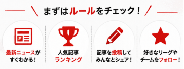

初めてサイトを訪れた方へ。
Gegen Press!は、海外サッカーの移籍情報やニュースを「誰が報じたか」という視点とともに届ける、ファン参加型のメディアです。この記事では、サイトの歩き方を順を追ってご案内します。
このサイトには、編集部だけがいるわけではありません。記事を書くのも、選手の情報を登録するのも、記者を評価するのも、読者であるあなた自身。全員がひとつの編集部として、他のどこにもないサッカーの情報基地を一緒に作っていく——それがGegen Press!です。

まずは、読んでみる
ホーム画面でニュースをチェックする
トップページには、いま動いている移籍情報と注目ニュースが集まります。最上段の「BREAKING NEWS」は特に重要な速報。その下に人気記事、インタビュー、話題の選手・記者・メディアと続きます。まずは気になる見出しをひとつ、開いてみてください。
ホーム画面へ →記者ランキングで「信頼できる書き手」を知る
Gegen Press!の心臓部です。記者本人を直接採点するのではなく、その記者の記事に読者がつけた★評価の平均が、そのままスコアになります。「どのメディアか」の一歩先、「誰が書いたか」で情報を見る習慣が、ここで身につきます。
記者ランキングへ →選手ページを眺めてみる
選手一覧には、登録済みの選手プロフィールが並びます。所属クラブ、ポジション、移籍の噂まで一覧できます。「あの選手がいない」と気づいたら——それは、あなたの出番です（CHAPTER 2へ）。
選手一覧へ →次に、参加してみる
記事を投稿してみる
海外メディアの報道を参考に、自分の言葉でニュースを書いて共有できます。情報の確度や引用元URLも記録できるので、丁寧に書くほど読者の信頼と記者ランキングの精度につながります。
※ 画像の著作権にはご注意ください。詳しくは利用規約をどうぞ。
記者・メディア・選手を追加する
紹介したい記者やメディア、載っていない選手は、あなた自身の手で追加できます。名前さえ分かれば大丈夫。あなたが追加した情報は、他の読者みんなの財産になります。
記者・メディアを追加する →ここは、みんなで作るサイトです。
記事も、選手データも、記者の評価も、すべて読者の手で育っていきます。一人で完璧な情報を揃えることはできなくても、みんなで少しずつ持ち寄れば、他では見られない厚みのあるデータベースと、良いコミュニティができていくはずです。肩の力を抜いて、できるところから参加してみてください。
このサイトを作る理由
現在は「どのメディアが報じたか」は意識されても、「誰が報じたか」まで見られる機会は多くありません。
しかし実際には、同じメディアでも記者やジャーナリストによって得意分野や情報の精度は大きく異なります。質の高い番記者の記事は移籍情報だけでなく、そのクラブへの理解を深める貴重な情報源でもあります。移籍情報だけでなく、クラブ運営のビジョン等に関して報道してくれる記者も多く居ます。
そのため、「フォロワー数」や「拡散力」ではなく、記者個人の信用度に焦点を当てたサイトを目指しています。
信頼性が分かることで、移籍の噂をもとにした選手・クラブへの誹謗中傷につながったりすることも減らせるのではないかと考えています。